|
4-3-3
|
Spain | 4 | - | 0 | Saudi Arabia |
5-4-1
|
| HT 3-0 | ||||||
|
FIFA World CupSunday 21 June 2026
|
||||||
- Venue
- Atlanta Stadium
- Attendance
- 68,239
- Referee
- Raphael Claus
Goal10'
Lamine Yamal
Assist: Mikel Oyarzabal
Goal21'
Mikel Oyarzabal
Assist: Aymeric Laporte
Goal24'
Mikel Oyarzabal
Assist: Dani Olmo
- 2
Substitution46'
Lamine Yamal
Yéremy Pino
Mikel Oyarzabal
Ferran Torres
Own goal49'
Hassan Al Tambakti
- 2
Substitution61'
Dani Olmo
Mikel Merino
Álex Baena
Nico Williams
Substitution70'
Pedri
Fabián Ruiz
Whistle45+6'
45+6'
Yellow card30'
Salem Al Dawsari
- 2
Substitution46'
Abdullah Al Khaibari
Mohamed Kanno
Musab Al Juwayr
Abdullah Al Hamddan
- 2
Substitution60'
Feras Al Brikan
Mohammed Abu Al Shamat
Abdulelah Al Amri
Alaa Al Hejji
Yellow card60'
Mohamed Kanno
Substitution90'
Nasser Al Dawsari
Khalid Al Ghannam
Spain | |
|---|---|
Goalkeeper | |
| 23 | Unai Simón |
Defender | |
| 12 | Pedro Porro |
| 14 | Aymeric Laporte |
| 22 | Pau Cubarsí |
| 24 | Marc Cucurella |
Midfielder | |
| 10 | Dani Olmo 61' |
| 16 | Rodri |
| 20 | Pedri 70' |
Forward | |
| 15 | Álex Baena 61' |
| 19 | Lamine Yamal 10'46' |
| 21 | Mikel Oyarzabal 21'24'46' |
Substitutes | |
| 6 | Mikel Merino 61' |
| 7 | Ferran Torres 46' |
| 8 | Fabián Ruiz 70' |
| 11 | Yéremy Pino 46' |
| 17 | Nico Williams 61' |
Saudi Arabia | |
Goalkeeper | |
| 21 | Mohammed Al Owais |
Defender | |
| 3 | Ali Lajami |
| 4 | Abdulelah Al Amri 60' |
| 5 | Hassan Al Tambakti 49' |
| 12 | Saud Abdulhamid |
| 24 | Moteb Al Harbi |
Midfielder | |
| 6 | Nasser Al Dawsari 90' |
| 7 | Musab Al Juwayr 46' |
| 10 | Salem Al Dawsari 30' |
| 15 | Abdullah Al Khaibari 46' |
Forward | |
| 9 | Feras Al Brikan 60' |
Substitutes | |
| 17 | Khalid Al Ghannam 90' |
| 18 | Alaa Al Hejji 60' |
| 19 | Abdullah Al Hamddan 46' |
| 23 | Mohamed Kanno 46'60' |
| 26 | Mohammed Abu Al Shamat 60' |


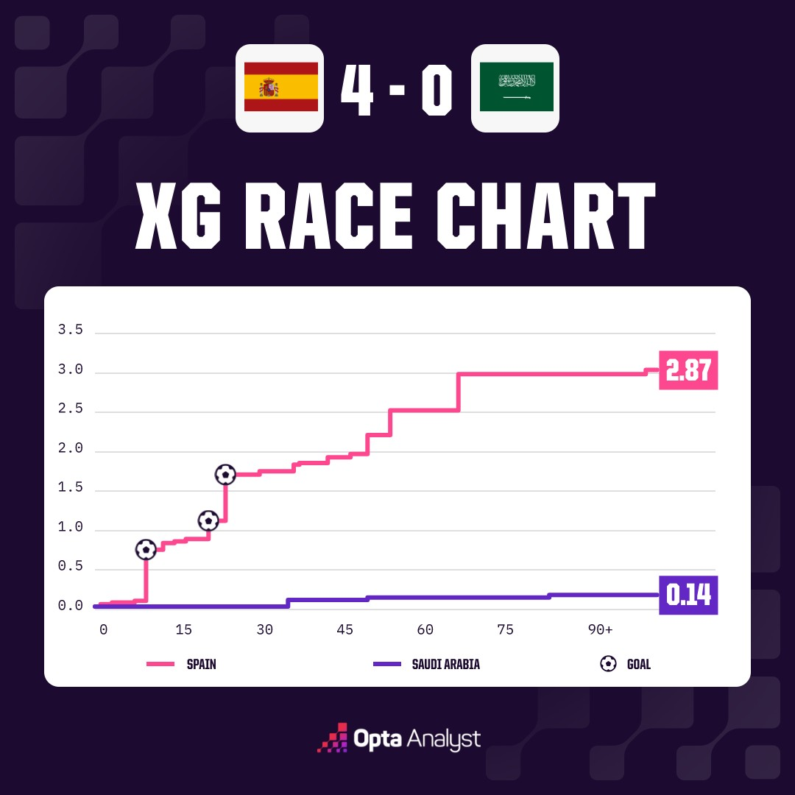
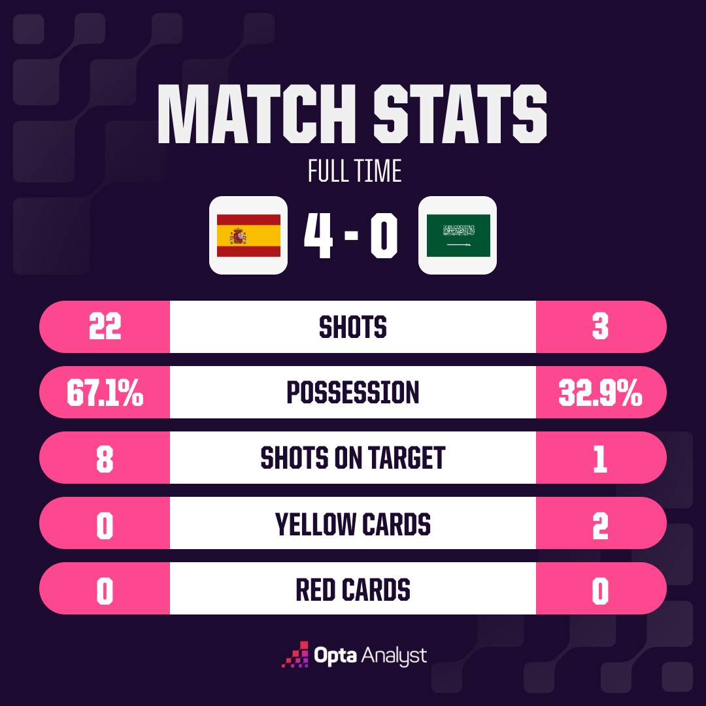
100'
Saudi Arabia have failed to win in their last 4 games in the FIFA World Cup, their last longer winless streak was from 3rd July 1994 to 20th June 2018, a run of 12 games.
100'
Spain are undefeated in their last 3 games in the FIFA World Cup, their last longer unbeaten streak was from 23rd June 2014 to 27th November 2022, a run of 7 games.
100'
Spain have kept a clean sheet in each of their last 3 games in the FIFA World Cup, a run of 388 minutes without conceding a goal.
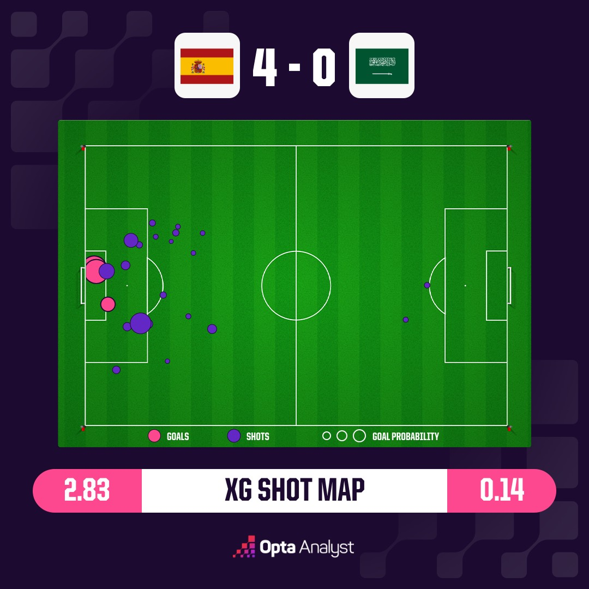
90+9'
IT’S ALL OVER! Spain have taken the victory, winning 4-0 thanks to goals from Lamine Yamal, Mikel Oyarzabal and Hassan Al Tambakti. Spain can celebrate, but Saudi Arabia will have to lick their wounds.
90+8'
BLOCK! An intervention from Ali Lajami might have just prevented a goal, with the defending player getting in the way of an attempt from Mikel Merino. Solid defending there!
90+5'
It has been 30 minutes since Spain last attempted a shot in this game.
90+5'
We are going to VAR. The game has stopped for now with the assistant referee in the video booth now set to review the incident. Will the decision be altered?
90+5'
VAR changes the decision! After a check, the video official believes the referee’s original call was wrong, and so the decision is overturned.
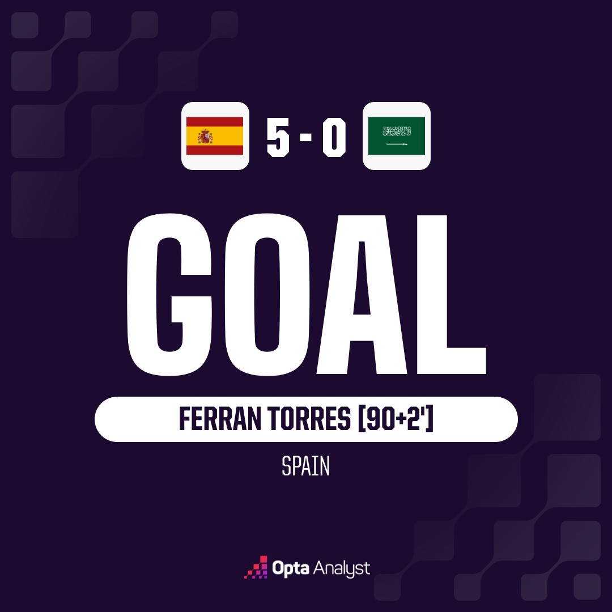
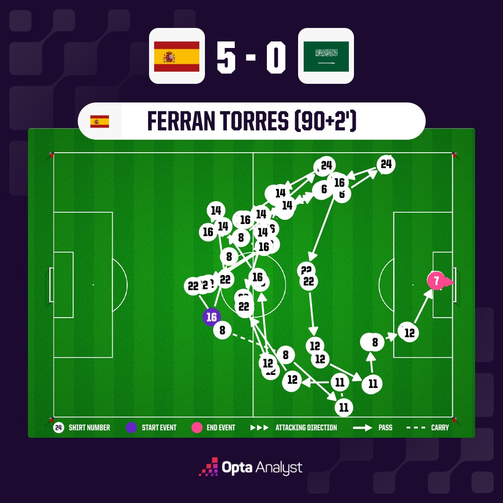
90+2'
The Saudi Arabia defence steps up in time and there is a frustration for Ferran Torres, who thought they were through until the flag goes up to signal offside.
90+1'
A lull in this match, as the teams prob and probe, but without much success. It has been 10 minutes since there was an attempt from either side, though Saudi Arabia are seeing more of the ball, with 61 per cent possession to Spain’s 39 per cent during that time.
90+1'
A substitution for Saudi Arabia sees Nasser Al Dawsari replaced by Khalid Al Ghannam. There does not appear to be any obvious sign of an injury, so that is a tactical switch.
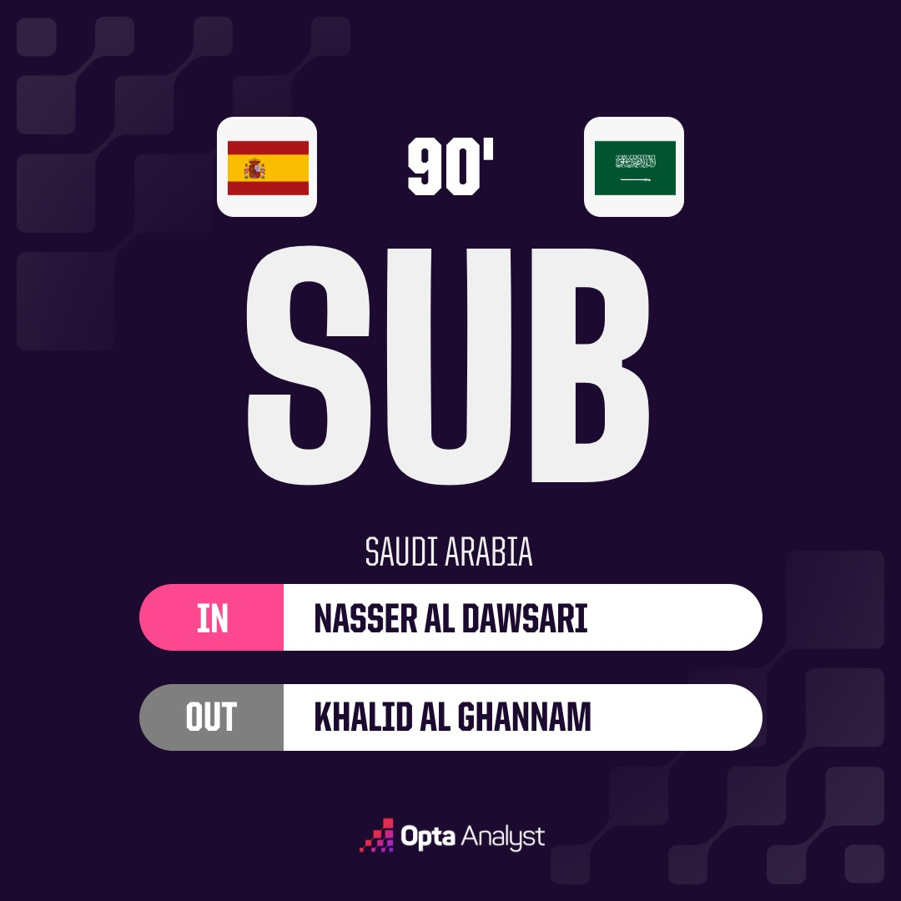
84'
Saudi Arabia are racking up corners and free-kicks - they’re starting to dominate in dangerous areas.
84'
A rash challenge from Aymeric Laporte, who sends Salem Al Dawsari tumbling, giving Saudi Arabia a free-kick. It is not in a threatening position, but it gives them a chance to get back on the ball.
83'
Marc Cucurella goes in on Mohammed Abu Al Shamat and concedes a foul. The free-kick is not in a particularly dangerous area from Spain’s viewpoint, though.
82'
Yéremy Pino goes in on Hassan Al Tambakti and concedes a foul. The free-kick is not in a particularly dangerous area from Spain’s viewpoint, though.
81'
Save! A long-range strike from Abdullah Al Hamddan was heading in, but Unai Simón got to it to parry it away from danger.
81'
Saudi Arabia have not had a shot on target so far in this game.
80'
There is plenty of possession for Spain, with 66.28% compared to Saudi Arabia’s 33.72% in the last 15 minutes. However, Spain have not been able to turn that dominance of the ball into a goal or even a shot during the period – which will be a huge frustration for their coach.
79'
Still behind, but Saudi Arabia are refusing to roll over - defensive urgency rising as they fend off more pressure and push for a late turnaround.
79'
It has been 30 minutes since Saudi Arabia last attempted a shot in this game.
79'
There is plenty of possession for Spain, with 67.47% compared to Saudi Arabia 32.53 % in the last 15 minutes. However, Spain have not been able to turn that dominance of the ball into a goal.
76'
Masterclass in game management from Spain. They're making Saudi Arabia chase ghosts with these patient passing moves, content to keep the ball until the final whistle.
76'
There are 15 minutes plus added time to go in this match. Spain have had more of the ball so far with a possession figure of 71.40%, while Saudi Arabia have had 28.60%.
75'
This game is certainly in a bit of a lull now, with neither team having had an attempt at goal in the past 10 minutes. It could do with something to spark it into life. Spain have had more possession during the quiet spell, but are yet to do much with it.
74'
Still behind, but Saudi Arabia are refusing to roll over - defensive urgency rising as they fend off more pressure and push for a late turnaround.
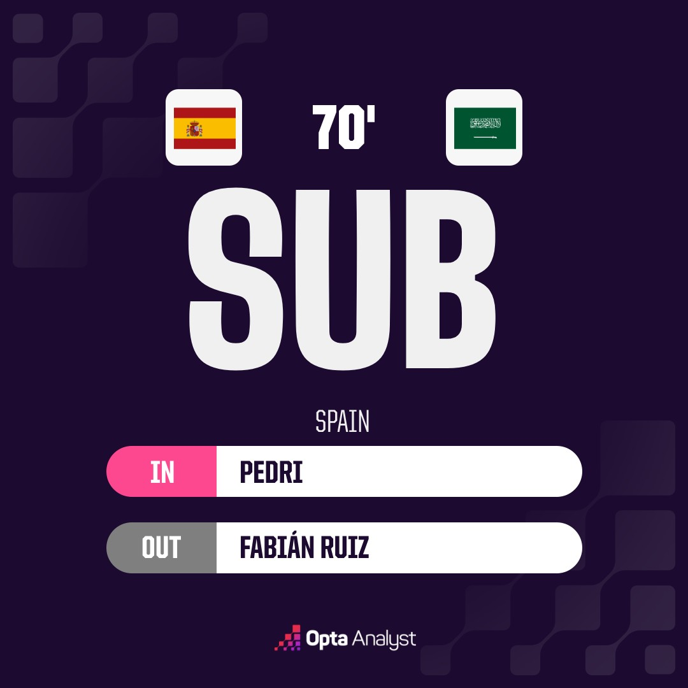
70'
The Spain manager is looking to the substitutes’ bench, bringing on Fabián Ruiz in place of Pedri. Will the change make a difference? Let’s find out!
68'
No luck – it’s offside! Rodri looked to dart in behind and get on the end of a pass, yet they just went too early, and the flag is up to signal offside.
67'
Spain are controlling the tempo beautifully in this second period - another sequence of 20+ passes as they make Saudi Arabia chase shadows and preserve their advantage.
66'
With 65 minutes gone, it is Saudi Arabia who lead the shot count, with 2 to Spain’s 21. Saudi Arabia have got no on target, while Spain have managed to get 8 on target.
65'
What a chance! That should really have been another goal for Spain, who would have extended their lead had Ferran Torres kept their composure, but instead Saudi Arabia survive that opportunity. Can they make their luck count?
64'
Plenty of the ball in the last quarter-of-an-hour of this match for Spain, but still Saudi Arabia stand firm, despite having had only 34.03% of the ball in that period. Can Spain make their possessional dominance count?
63'
Neither team has had a shot in the past 10 minutes, as this match just enters something of a down period. Spain have seen more of the ball, with 75 per cent possession, but Saudi Arabia are keeping them away from goal. There is still a chance the match will spark into life, though.
62'
Ferran Torres goes in on Ali Lajami and concedes a foul. The free-kick is not in a particularly dangerous area from Spain’s viewpoint, though.
62'
A free-kick to Saudi Arabia, as Yéremy Pino goes in and fouls Moteb Al Harbi. However, Spain will not mind giving one away in this area too much, with plenty of distance to their goal.
62'
A substitution for Spain sees Álex Baena replaced by Nico Williams. There does not appear to be any obvious sign of an injury, so that is a tactical switch.
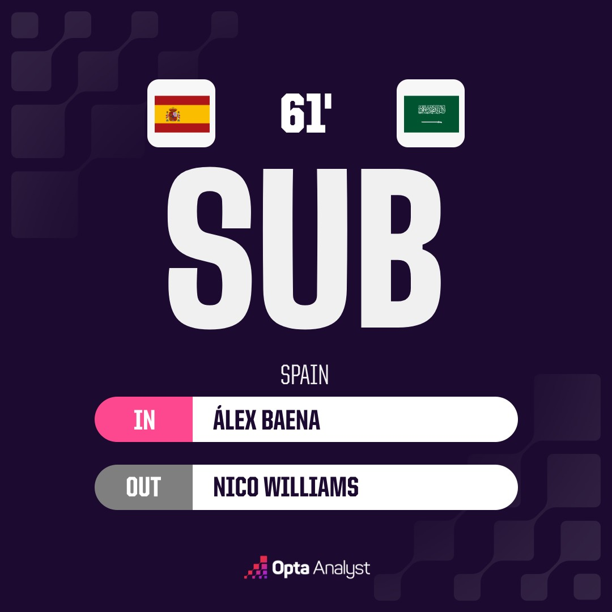
61'
Substitution! Mikel Merino replaces Dani Olmo for Spain as the manager shuffles the pack. Can Mikel Merino make an impression as this match continues?
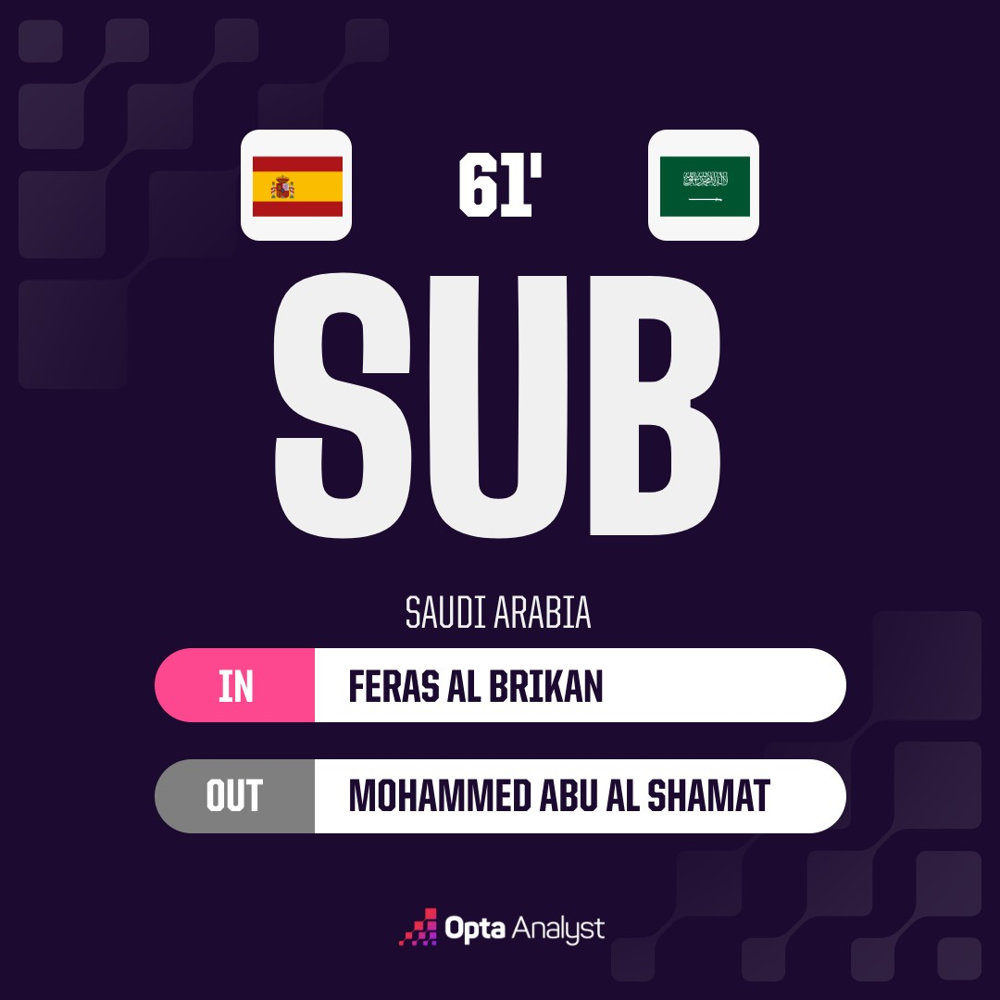
60'
Saudi Arabia are making a tactical change. Abdulelah Al Amri is leaving the field and in their place comes Alaa Al Hejji – we will soon see if this switch has the desired impact.
60'
The Saudi Arabia manager is looking to the substitutes’ bench, bringing on Mohammed Abu Al Shamat in place of Feras Al Brikan. Will the change make a difference? Let’s find out!
60'
Yellow card! Mohamed Kanno will have to be careful from now on after they are cautioned.
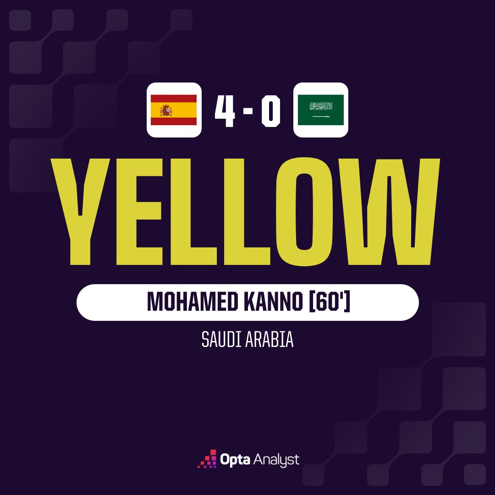
60'
A rash challenge from Mohamed Kanno, who sends Rodri tumbling, giving Spain a free-kick. It is not in a threatening position, but it gives them a chance to get back on the ball.
54'
A foul from Pedro Porro on Salem Al Dawsari sees Saudi Arabia win a free-kick, but it is not in a dangerous position, so Spain should be confident they can defend it easily enough.
54'
Despite trailing, Saudi Arabia are showing real defensive grit, digging in and stopping further damage as they try to build a platform.
53'
A rash challenge from Marc Cucurella, who sends Feras Al Brikan tumbling, giving Saudi Arabia a free-kick. It is not in a threatening position, but it gives them a chance to get back on the ball.
53'
Mohammed Al Owais has made 5 saves, the first time he has made at least 5 saves in a match in the FIFA World Cup since facing Uruguay on 15th June 2026 (9 saves).
53'
SHOT! Ferran Torres manages to get a shot off from inside the area, but although it was heading in, they cannot get enough on it to beat Mohammed Al Owais, who makes the save.
53'
SHOT! Pedro Porro manages to get a shot off from inside the area, but although it was heading in, they cannot get enough on it to beat Mohammed Al Owais, who makes the save.
49'
GOAL! Oh dear – it’s getting even worse for Saudi Arabia! They are now 4 goals behind, after Hassan Al Tambakti turns into their own net. What a calamity, and that just compounds their misery.
49'
An opportunity for Spain to extend their lead goes begging, as Marc Cucurella is unable to convert from a good opening. Will they live to regret that miss?
46'
That’s offside! A switched-on defensive line from Spain, as they step up at the right time to catch Salem Al Dawsari offside, and the assistant referee’s flag is up.
46'
A substitution for Spain sees Lamine Yamal replaced by Yéremy Pino. There does not appear to be any obvious sign of an injury, so that is a tactical switch.
46'
The Spain manager is looking to the substitutes’ bench, bringing on Ferran Torres in place of Mikel Oyarzabal. Will the change make a difference? Let’s find out!
46'
Abdullah Al Khaibari’s match is over as Saudi Arabia decide to make a substitution. Mohamed Kanno enters the field in what looks like a tactical change.
46'
Saudi Arabia are making a tactical change. Musab Al Juwayr is leaving the field and in their place comes Abdullah Al Hamddan – we will soon see if this switch has the desired impact.
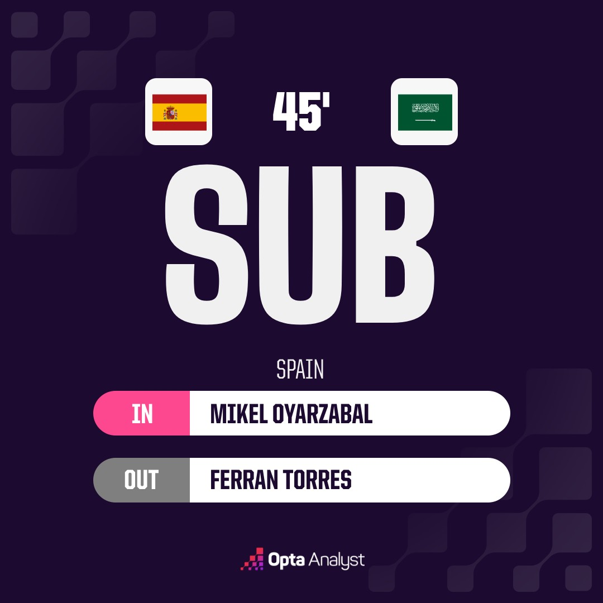
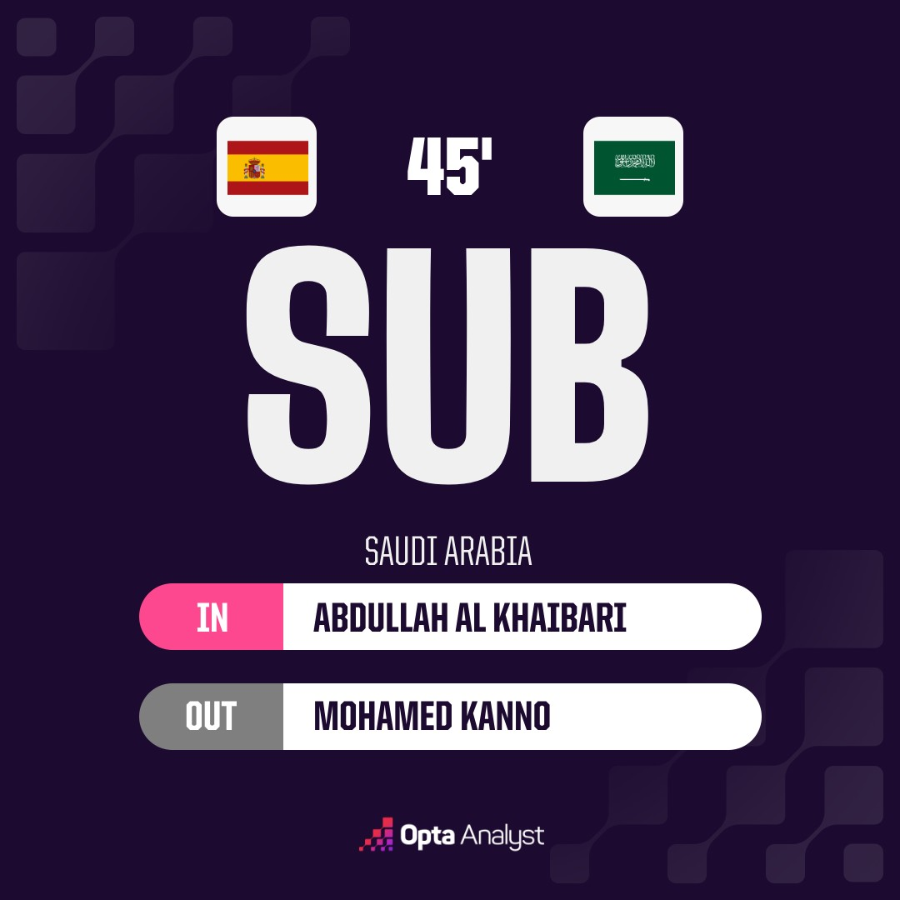
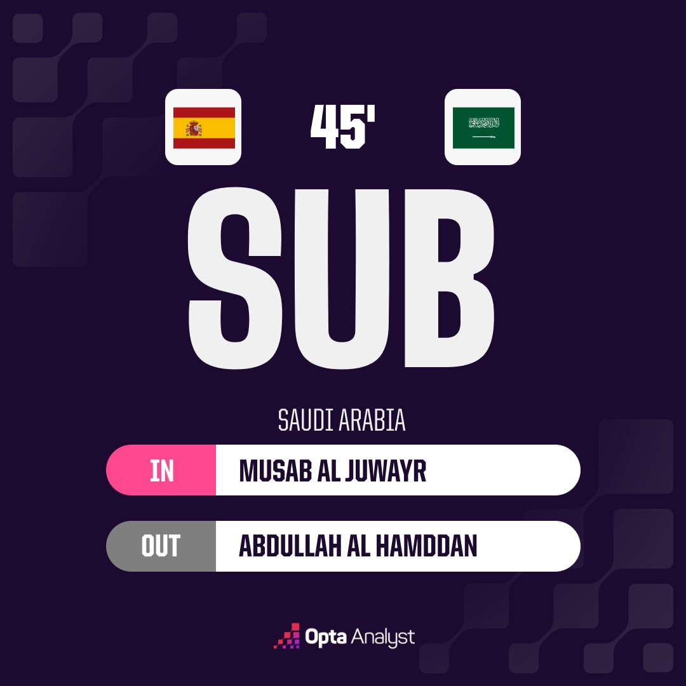
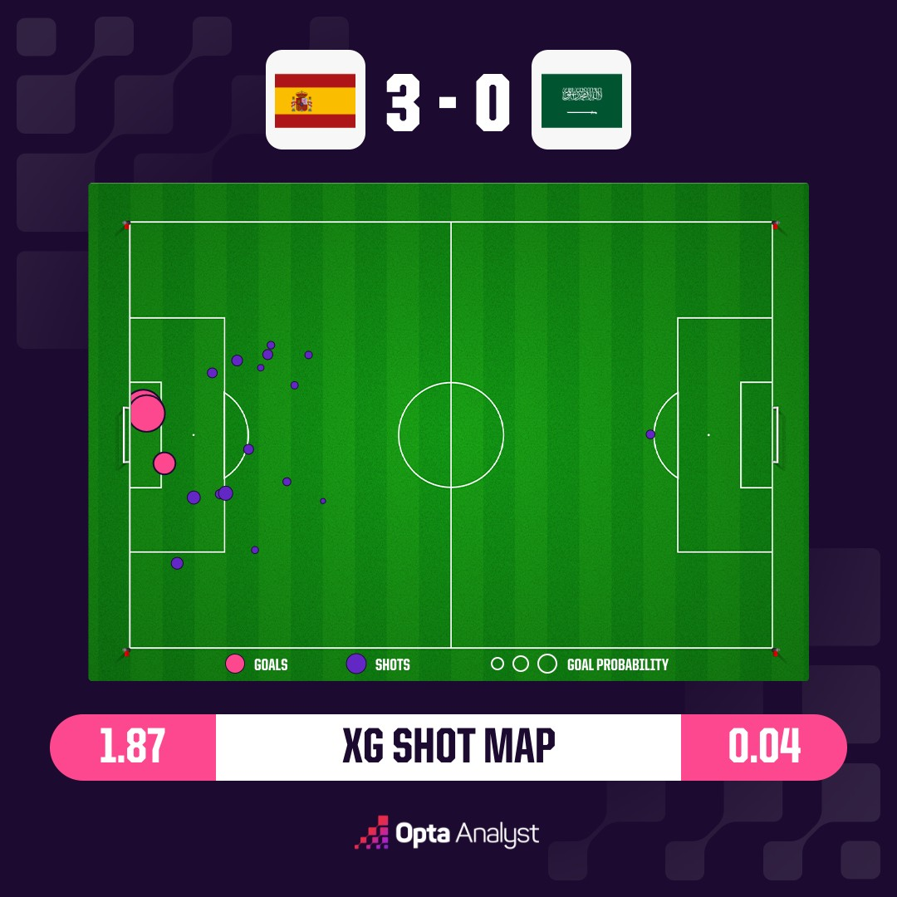
45+6'
HALF-TIME: Spain 3-0 Saudi Arabia. An intriguing first half comes to a close with Spain going in ahead at the interval here at Atlanta Stadium.
45+5'
Free-kick! A foul from Mikel Oyarzabal on Salem Al Dawsari. It is well away from Spain’s goal, so it is unlikely to result in a chance for Saudi Arabia.
45+4'
That’s offside! A switched-on defensive line from Spain, as they step up at the right time to catch Musab Al Juwayr offside, and the assistant referee’s flag is up.
45+4'
That might have been going in! A fantastic block from Pedri, who gets in the way of a goal-bound effort from Salem Al Dawsari. Would the goalkeeper have been beaten? We will never know.
45+1'
MISS! The score remains 3-0, with Saudi Arabia relieved after Spain’s Rodri goes for goal but sends their attempt off target. Not one to write home about, that one.
45+1'
Great defending from Spain, who are staying organised and winning key battles to preserve their lead.
42'
Mikel Oyarzabal has attempted 5 shots, the first time he has attempted at least 5 shots in a match in the FIFA World Cup since facing Cabo Verde on 15th June 2026 (5 shots).
42'
That is a disappointing effort from Mikel Oyarzabal, who went for glory but got their attempt wrong, and the shot sailed off target. A frustrating moment for Spain.
41'
A foul from Dani Olmo on Nasser Al Dawsari sees Saudi Arabia win a free-kick, but it is not in a dangerous position, so Spain should be confident they can defend it easily enough.
41'
Saudi Arabia have not had a shot on target so far in this game.
39'
Spain are having plenty of the ball, with 76.62% possession in the last 15 minutes. However, they have been unable to transfer that possessional dominance into a goal during that period.
38'
Despite trailing, Saudi Arabia are showing real defensive grit, digging in and stopping further damage as they try to build a platform.
37'
The Spain defence steps up in time and there is a frustration for Musab Al Juwayr, who thought they were through until the flag goes up to signal offside.
37'
Lamine Yamal has attempted 5 shots, his highest total in a single match in the FIFA World Cup.
37'
No luck! Lamine Yamal takes on a shot that, had they got it right, might have been set to test the goalkeeper, but instead it is sent off target and Saudi Arabia come away unscathed.
36'
Lamine Yamal goes for goal with a strike from distance, but Mohammed Al Owais is able to watch it all the way and make the save. A bit of a tester, there.
35'
That is a disappointing effort from Abdulelah Al Amri, who went for glory but got their attempt wrong, and the shot sailed off target. A frustrating moment for Saudi Arabia.
35'
Spain looking confident now - a composed spell of possession as they stroke the ball around and head toward the break in control.
33'
Despite trailing, Saudi Arabia are showing real defensive grit, digging in and stopping further damage as they try to build a platform.
32'
Excellent defensive work from Spain; their organization and success in key duels are effectively safeguarding their lead.
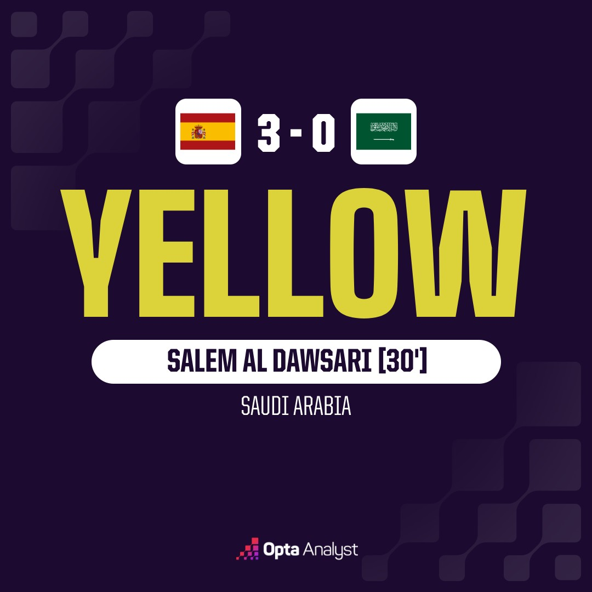
30'
The referee goes to their pocket and pulls out a yellow card, which is brandished in the direction of Salem Al Dawsari. Will they be able to avoid a second booking?
30'
MISS! The score remains 3-0, with Saudi Arabia relieved after Spain’s Lamine Yamal goes for goal but sends their attempt off target. Not one to write home about, that one.
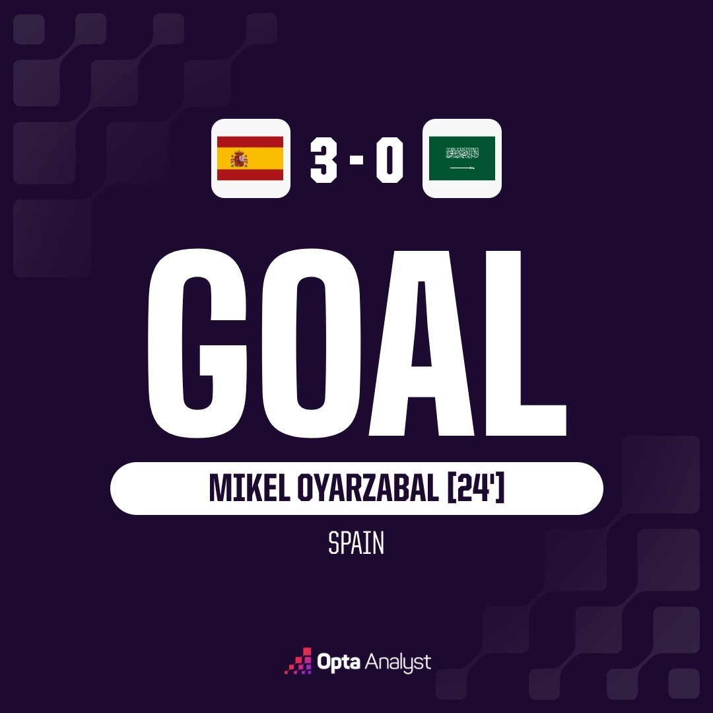
24'
Dani Olmo has assisted his first goal in the 2026 FIFA World Cup.
24'
Spain have scored 3 goals in the FIFA World Cup game for the first time since 23rd November 2022 against Costa Rica (W7-0).
24'
Is that game over? Spain are now well ahead, having extended their lead to 3 goals thanks to Mikel Oyarzabal’s effort. It’s now 3-0, and Saudi Arabia face an uphill battle to get back into it.
24'
Mikel Oyarzabal has scored his second goal of the 2025 FIFA World Cup this edition, more than any other Spain player.
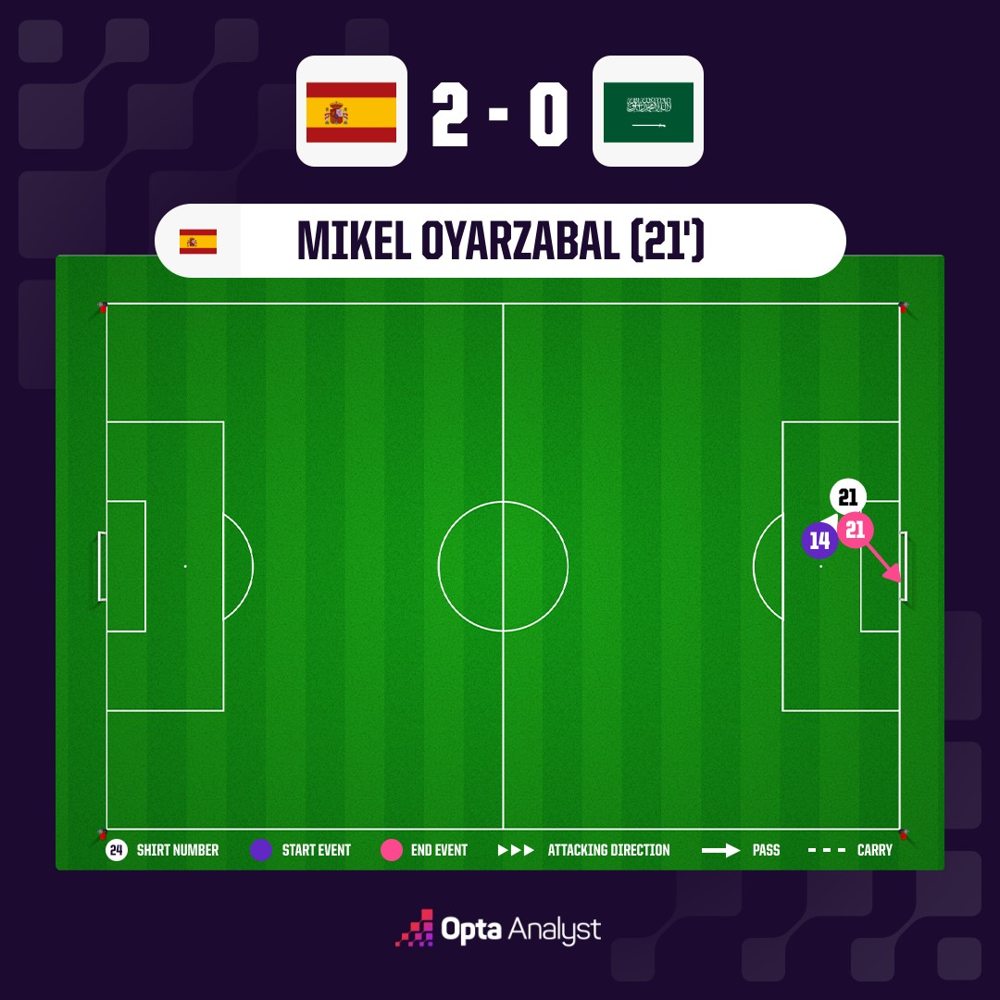
21'
Aymeric Laporte has assisted his first goal in the 2026 FIFA World Cup.
21'
Mikel Oyarzabal has scored his first goal in the 2026 FIFA World Cup.
21'
GOAL! Mikel Oyarzabal scores, and Spain are now well in front – surely they will go on and see this one out now? It seems a long way back for Saudi Arabia, with Spain well in control of this match.
21'
No luck! Dani Olmo takes on a shot that, had they got it right, might have been set to test the goalkeeper, but instead it is sent off target and Saudi Arabia come away unscathed.
21'
Saudi Arabia may be behind, but they’re battling hard defensively to stop the gap from widening. A gritty response at the back.
20'
Strong early signals from Spain at the back — calm and commanding as they break up attacks with ease.
17'
Mohammed Al Owais is called into action to keep out a shot from outside the box by Mikel Oyarzabal. The effort from the Spain player was on target, but Saudi Arabia shot-stopper got to it.
16'
A free-kick to Saudi Arabia, as Álex Baena goes in and fouls Musab Al Juwayr. However, Spain will not mind giving one away in this area too much, with plenty of distance to their goal.
15'
No luck! Álex Baena takes on a shot that, had they got it right, might have been set to test the goalkeeper, but instead it is sent off target and Saudi Arabia come away unscathed.
13'
A chance goes begging as Pedri gets off a shot that does not hit the target. They might have done better with that one, but instead it is a goal-kick to Saudi Arabia.
10'
Mikel Oyarzabal has assisted his first goal in the 2026 FIFA World Cup.
10'
Spain ended a run of 294 minutes without a goal in the FIFA World Cup, their longest since going 236 minutes without scoring from 3rd June 1978 to 11th June 1978.
10'
GOAL! Spain have gone in front! Lamine Yamal makes a dream start to the game by providing the early goal. Spain have the advantage now – how will Saudi Arabia respond to falling behind in the early stages?
10'
Lamine Yamal has scored his first goal in the 2026 FIFA World Cup.
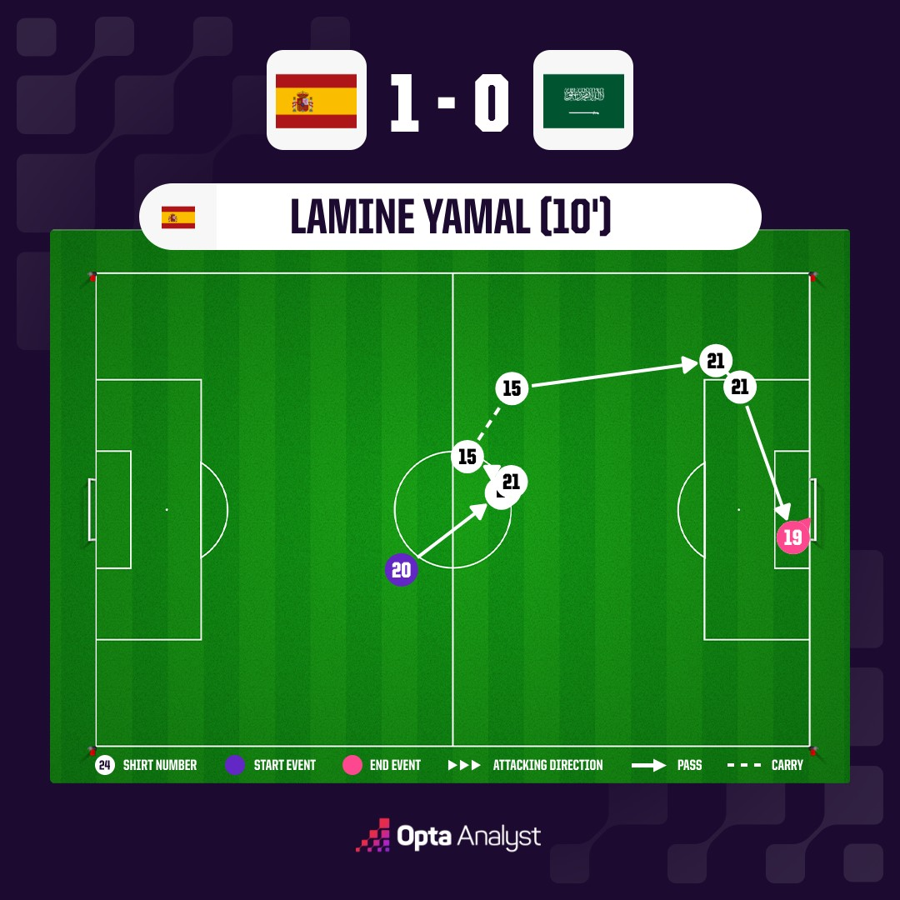
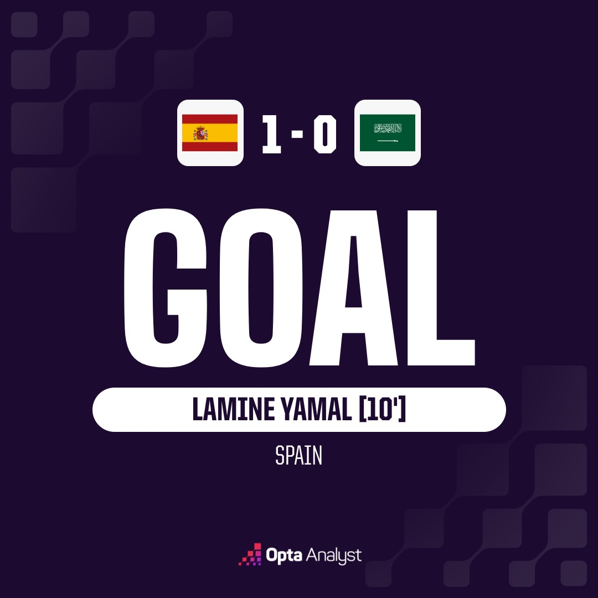
10'
That is a disappointing effort from Pedro Porro, who went for glory but got their attempt wrong, and the shot sailed off target. A frustrating moment for Spain.
8'
A chance goes begging as Dani Olmo gets off a shot that does not hit the target. They might have done better with that one, but instead it is a goal-kick to Saudi Arabia.
5'
It’s been tight so far, and Saudi Arabia are making sure it stays that way with strong defensive discipline and well-timed clearances.
4'
A chance goes begging as Lamine Yamal gets off a shot that does not hit the target. They might have done better with that one, but instead it is a goal-kick to Saudi Arabia.
2'
Spain win a corner after Álex Baena sees a shot diverted wide by Saud Abdulhamid. Can Spain make this opportunity count, or will Saudi Arabia defend this?
1'
KICK-OFF! And here we go! We are up and running in this clash between Spain and Saudi Arabia at Atlanta Stadium. Stay tuned for all the action as it happens!
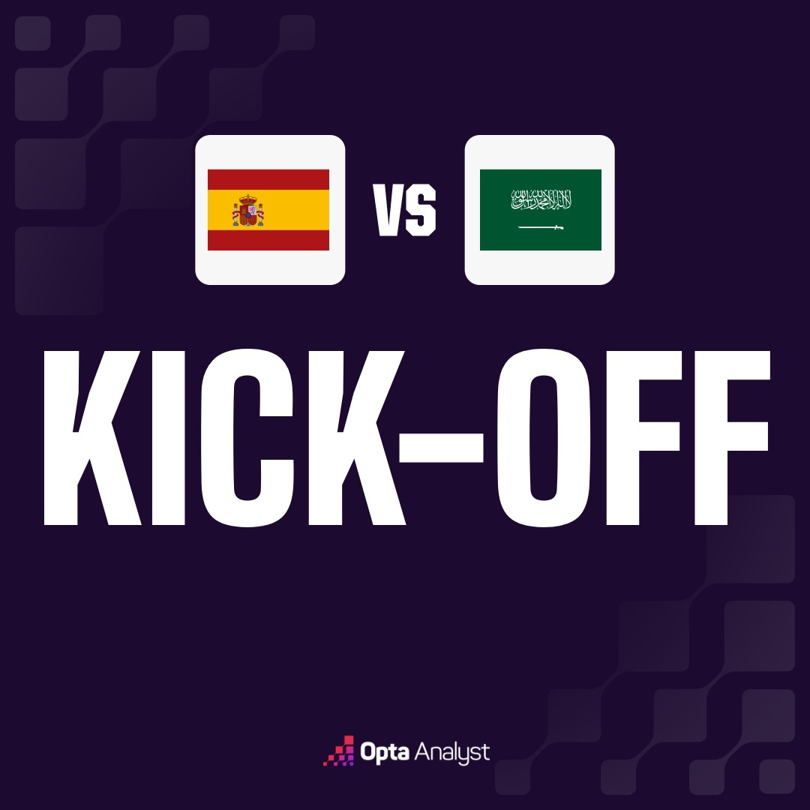
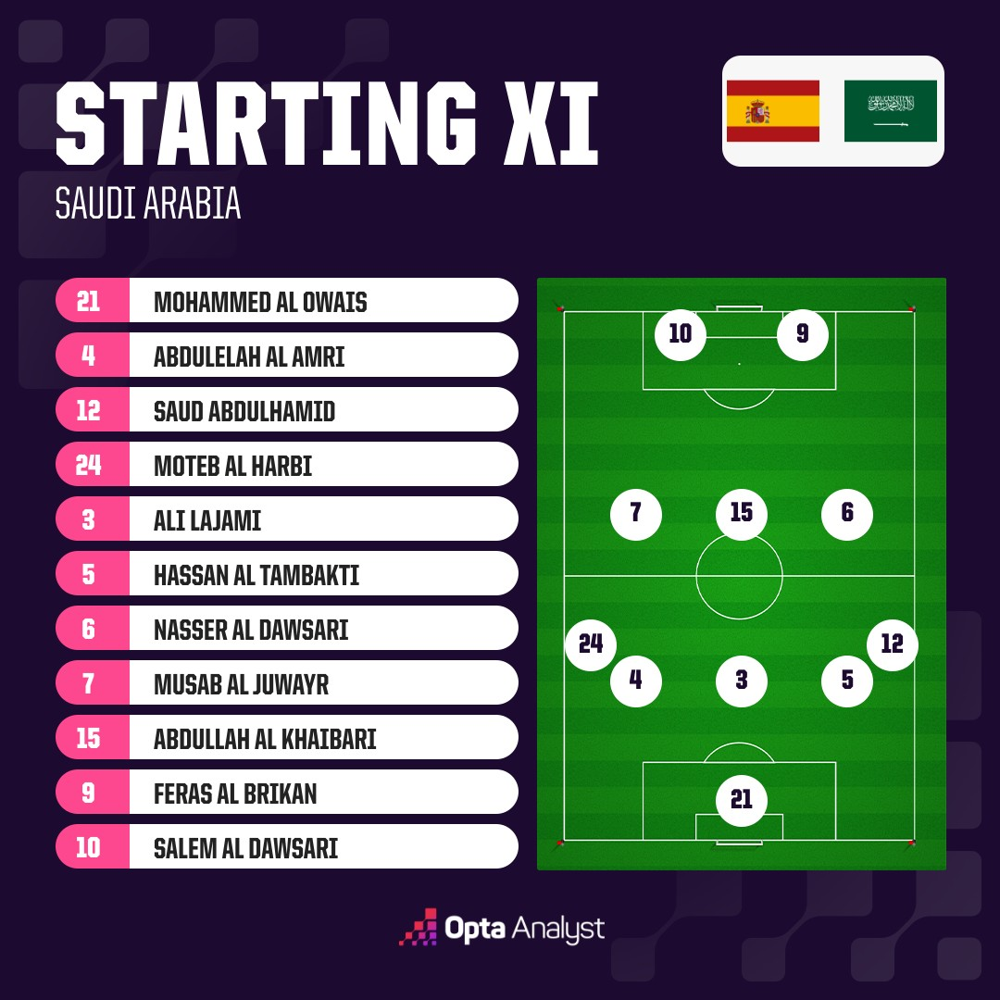
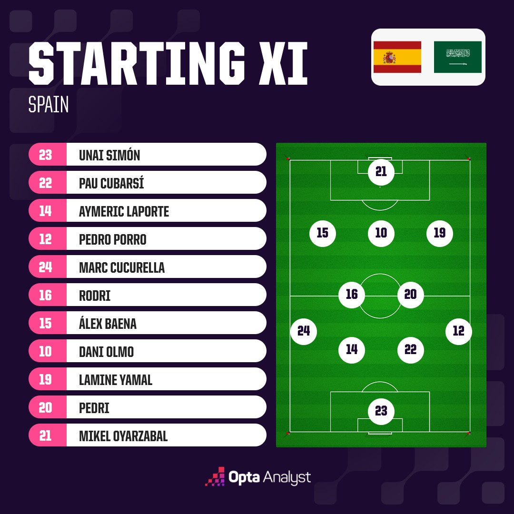
There have been fewer than 3 goals scored in total in each of Saudi Arabia's last 5 games
Two teams looking for their first win in the FIFA World Cup group stage will clash at Atlanta Stadium on Sunday, as Spain face Saudi Arabia.
Spain played out a 0-0 draw in their opening World Cup group stage match against Cabo Verde on June 15. They are undefeated in their last 11 games in all competitions.
Saudi Arabia played out a 1-1 draw against Uruguay in their opening World Cup game, a June 15 group stage clash at Miami Stadium, improving their unbeaten streak to three. Abdulelah Al Amri netted in the draw. In 2026, they have won one, drawn two, and lost three.
Saudi Arabia and Spain are second and third in the group, respectively, level on one point. Leading the group are Uruguay on one point. Cabo Verde are fourth, also on one point.
In the previous encounter between the clubs in September 2012, it was Spain who emerged victorious 5-0.
Spain have yet to find the net in the World Cup this season. With a goal against Uruguay, Al Amri is the early leading World Cup scorer for Saudi Arabia.
In their last six matches in all competitions, Spain have won two and drawn four. The Spanish side scored nine and conceded four over that stretch, scoring first in four of the six contests. A majority of their goals (six) came in the first half, while their opponents netted two times in the first 45 minutes. The Saudi side have won one, drawn two and lost three in their last six. The Saudi side scored six and conceded nine over that stretch, netting first in three of the six. They had three goals in the first half, while their opponents netted four times before the break.
-
General
Possession 67.1% 67.0832.9232.9% Possession lost in defensive half 14 143939 Possession lost in middle third 33 334949 Duels 66 667070 Duels success rate 43.9% 43.93952.85752.9% Aerial duels 15 151515 Aerial duels won 73.3% 73.33326.66726.7% Successful dribbles 7 788 Fouls won 2 21010 Offsides 2 233 Corner awarded 6 611 -
Distribution
Passes 726 726364364 Long passes 38 383535 Long passes proportion (%) 5.2% 5.2349.6159.6% Passing accuracy 92.0% 92.01180.76980.8% Passes in opponents' half 449 449185185 Passing accuracy in opponents' half (%) 88.6% 88.64175.13575.1% Total passes in the final third 252 2528181 Passing accuracy in final third (%) 84.5% 84.52467.90167.9% Forward passes 417 417226226 Forward passes (%) 57.4% 57.43862.08862.1% Through balls 6 600 Final third entries 66 664444 Penalty area entries 44 441010 Total open play crosses 23 2355 Crosses 25 2555 Crossing accuracy 28.0% 2800.0% -
Attack
Goals 4 400 Shots 22 2233 Shots on target 8 811 Blocked shots 2 211 Headed shots 1 100 Shots outside the box 9 933 Shots inside the box 13 1300 Shots accuracy excluding blocked shots 40.0% 405050.0% Shooting accuracy 36.4% 36.36433.33333.3% Key Passes 15 1511 -
Defence
Tackles 10 101515 Tackles success rate 80.0% 808080.0% Clearances 17 173535 Interceptions 13 131313 Recoveries 55 553737 Attacking third recovery 7 711 Defensive third recovery 25 251717 Midfield third recovery 23 231919 Recoveries in attacking half (%) 12.7% 12.7272.7032.7% -
Discipline
Fouls conceded 10 1022 Yellow cards 0 022 Red cards 0 000